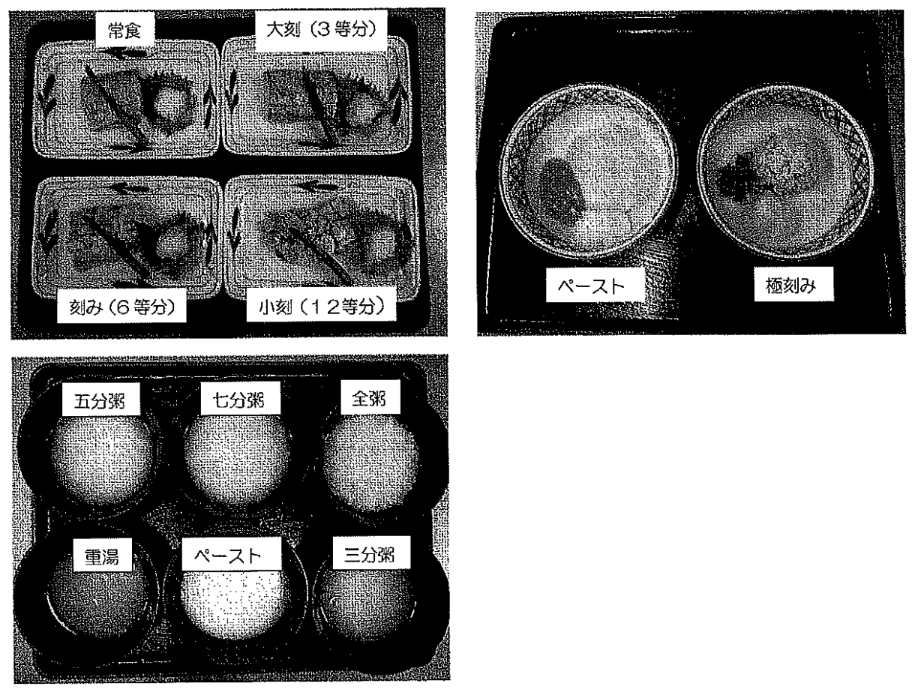
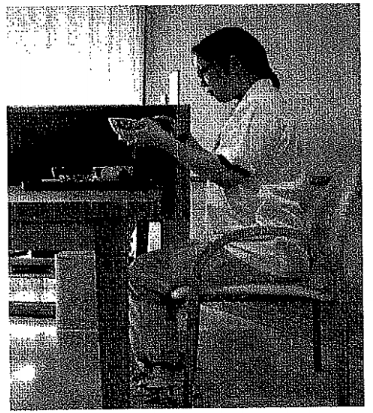
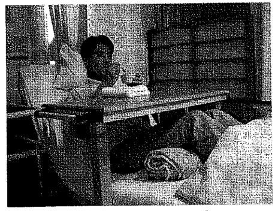

食事介助（配茶・配膳～食事）
配茶
-
お茶の温度に気を付ける
-
声をかけながら配る
-
必要に応じて代用品を用意する
注意
利用者に応じて、持病や服薬の関係で糖分やカフェイン禁止の方には注意する
配膳
利用者の生活リズムやペースに合わせた配膳を心がける。なんらかの理由で食事が時間内にとれなかった場合は、大退職の希望を確認し調理係（栄養・調理）と調整の上、提供する。
-
食事開始時間は下記を目安とし、利用者の要望に応じて配慮するが、衛生面を考慮し、開始時刻の１時間後を終了時刻とする。
朝：7時30分 昼：12:00 夜：18:00
-
職員は手洗い・消毒を行い、エプロン・三角巾（帽子）を着用する。
-
食前薬のある利用者には、配膳前に与薬する。（与薬に関しては、服薬マニュアル参照）
-
食事内容を食札にて確認する（種類・禁止食品・治療食等）
-
配膳時に献立の説明をする
-
食器や自助具の位置は、利用者の身体状況や好みに合わせて配慮する。＜食器位置の基本は主催を中心に左にご飯、右に汁物とする。また主菜の添え物（大根おろし等）は右にくるようにする＞
食事形態写真

身体の状態に応じた食事の進め方
-
-
食事の姿勢
-
座位姿勢

-
軽いうなずき姿勢で、顎を軽く引く。
※顎を引く➡咀嚼、喉の奥への送り込み、嚥下がしやすいため
-
体幹は軽く前傾する
※体幹の前傾➡飲み込みやすい頭部の姿勢をとるため
-
足をしっかり床の上におろして、やや後方にひく
※足を後方に引いて床を踏む➡前傾姿勢から床への転倒を防ぐ
ベッド上姿勢

-
介助時は上肢ギャッジアップを45°～90°に設定する（本人の状態を見て角度調整）
-
食事をする際は足を軽く曲げ、ずり落ちないようにクッション等を挟む、または下肢ギャッジアップをする（ずり落ちることで皮膚に発赤等が出来てしまう）
-
-